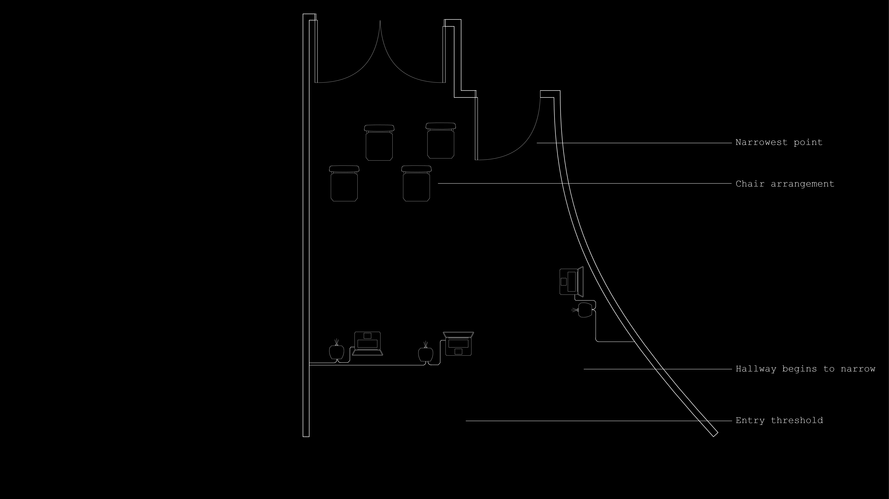

MSCDP: SPATIAL UX | 2025
In collaboration with peers Ji-in Kang and Minsup Chung, this project is a spatial UX interactive
installation exploring the psychological weight of contemporary global crises through body tracking and dynamic visual graphics
that react and respond to human proximity and movement. Media Glitch aims to emphasize the invisible burdens of the present day that
feel simultaneously distant and suffocatingly close. This project materializes that paradox: issues that seem abstract in theory become
overwhelming close when we engage with them directly. This installation creates a somatic experience of anxiety- the feeling that problems
grow larger the more attention we give them, yet ignoring them allows them to persist in our peripheral awareness.
Upon entering the space, the user is drawn in through immersive graphics and climate data. The data follows the user as they move through the space.
Using Procession and TouchDesigner, news headlines then appear on each chair, inviting the user to engage with the exhibit. The user can use a hand
gesture to select one of the headlines to read about it further. The space itself begins to compress physically as information intensifies. It mirrors
the inescapable anxiety of contemporary media engagement. The architecture of doom scrolling manifests as actual claustrophobia. Viewers find themselves
trapped in a narrowing corridor of information they cannot ignore, solve, or escape.
